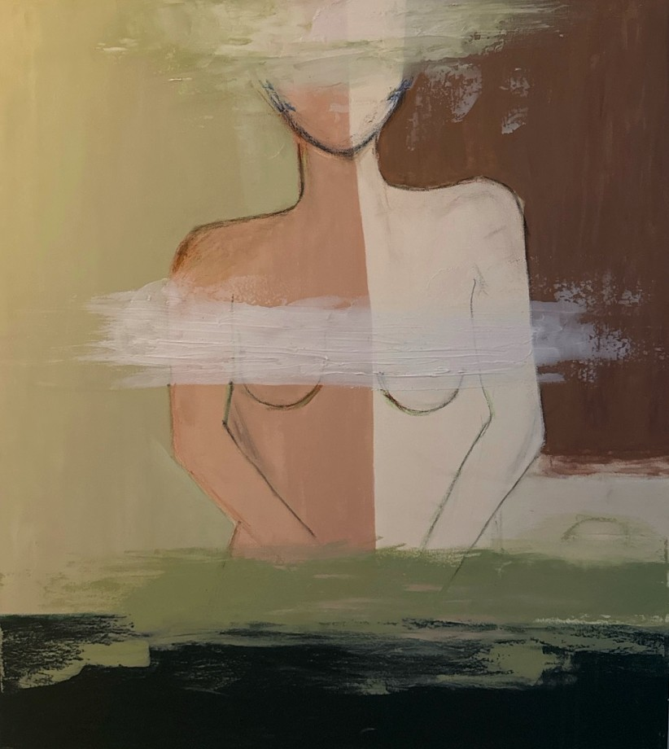

"Veil of the Self" is a striking modern abstract piece that masterfully balances the human form with elements of abstraction, drawing the viewer into a contemplative space between identity and invisibility. The faceless figure at the center of the work is partially obscured by wide, horizontal brushstrokes that create an atmosphere of introspective ambiguity.
The muted palette, with shades of soft greens, browns, and whites, evokes a sense of serenity, while the absence of detail in the face suggests a meditation on the nature of identity—what is hidden, what is revealed, and what lies beyond surface appearances. The artist uses minimalism and subtle texture to invite viewers into a dialogue with their own sense of self, asking them to ponder the layers that define individual identity.
This painting can be seen as a reflection on the elusive nature of identity in the modern world. It captures the human desire to define oneself while acknowledging the inherent mystery and fluidity of personal identity. Ronak Bahador's use of abstraction invites the viewer to look beyond the physical form and engage with the deeper, more nuanced aspects of self-perception.